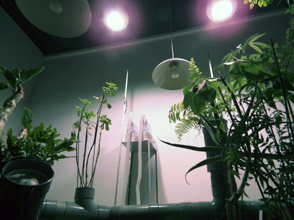

A partir de capteurs nous récupérons les valeurs équivalentes aux besoins des végétaux afin de les attribuer aux commandes de processus climatiques et sonores diffusés dans l'espace d'exposition. Les plantes orchestrent leur milieu de culture,
elles en permettent le maintien, l'équilibre et le mouvement.
Exposition réalisée en partenariat avec le Jardin botanique de Lyon.
Remerciements Cécile Pasquier, Hugo Roger, Vincent Roudault, Philippe Bouchiex et Frédéric Pautz.
Matériaux:
Plantes (Cussonia spicata, Cyphostemma juttae, Impatiens bicaudata, Mimosa aculeaticarpa var. biuncifera, Aloe spicata...), capteurs humidité/température, capteurs de luminosité, capteurs de montée de sève dit de Granier TDP,
hauts-parleurs waterproof (x6), amplis, brumisateurs (x2), système d'arrosage par buses (x2), bois, eau, ventilation, lampes chauffantes en céramiques (x2), lampe de croissance à LED.
Dimensions: environs 6m²
